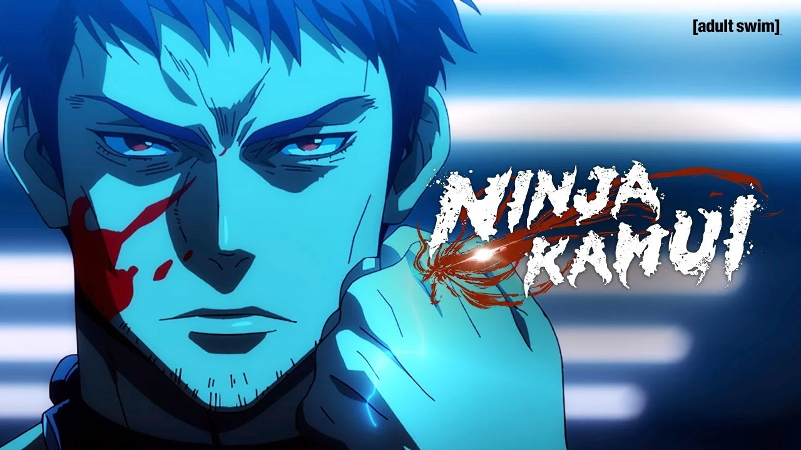
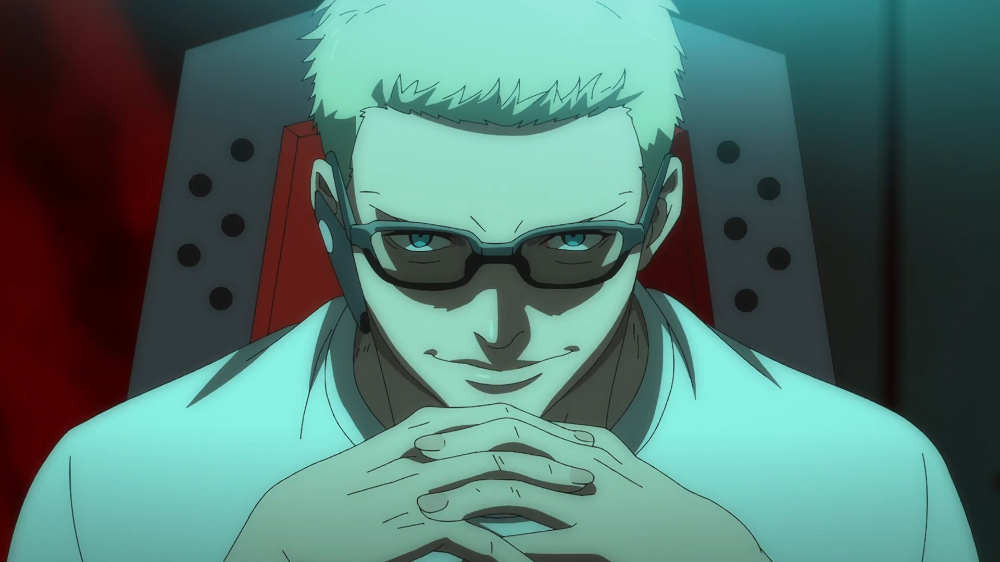
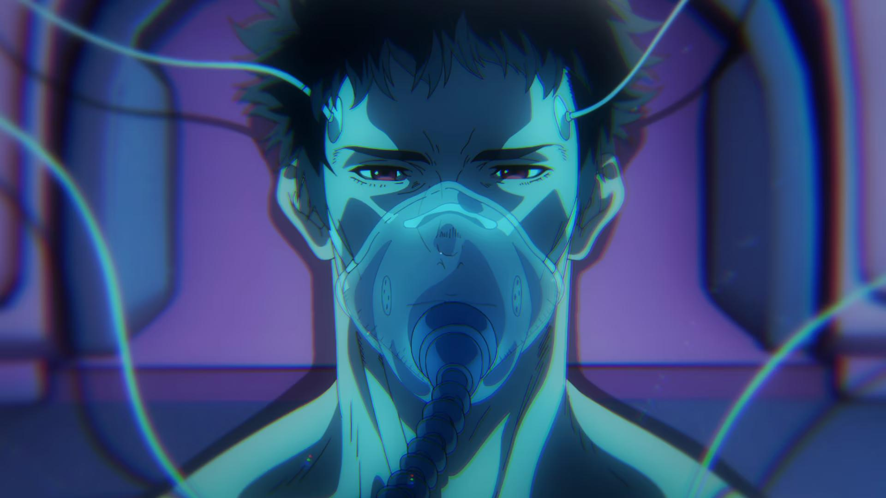

Ninja Kamui conta a história de Joe Higan, um ex-ninja que escapou do seu clã e se escondeu de um passado violento. Porém, Higan acabou emboscado por seu antigo clã, que acabou assassinando sua família a sangue frio por trair o antigo código ninja.